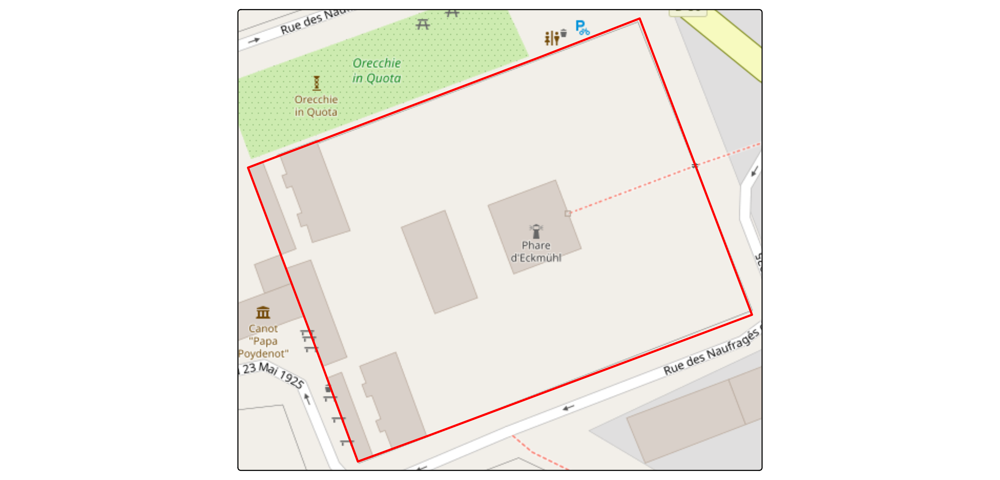
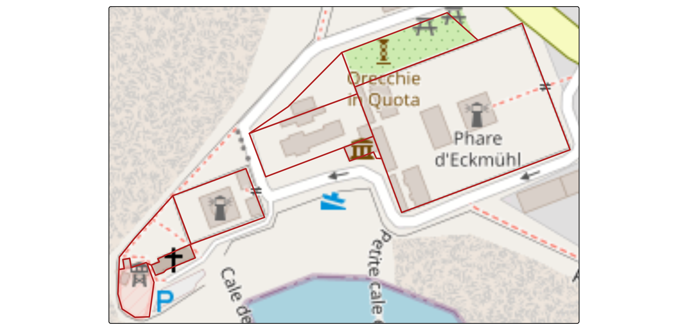
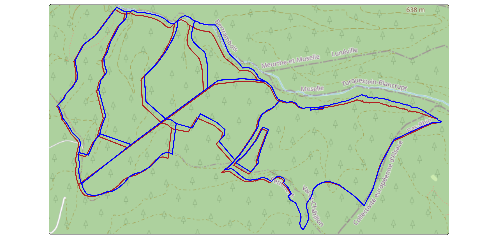
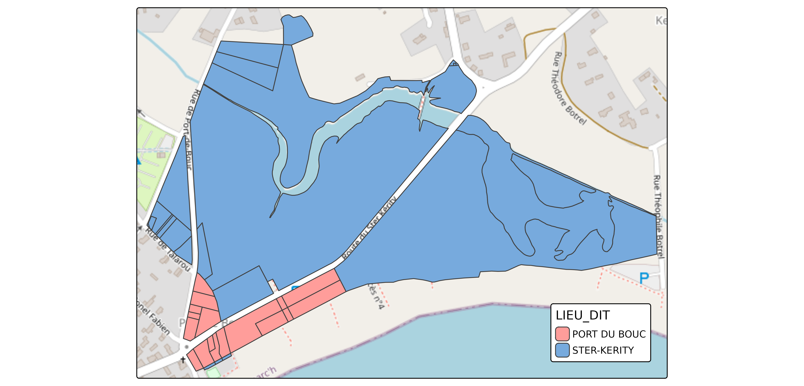
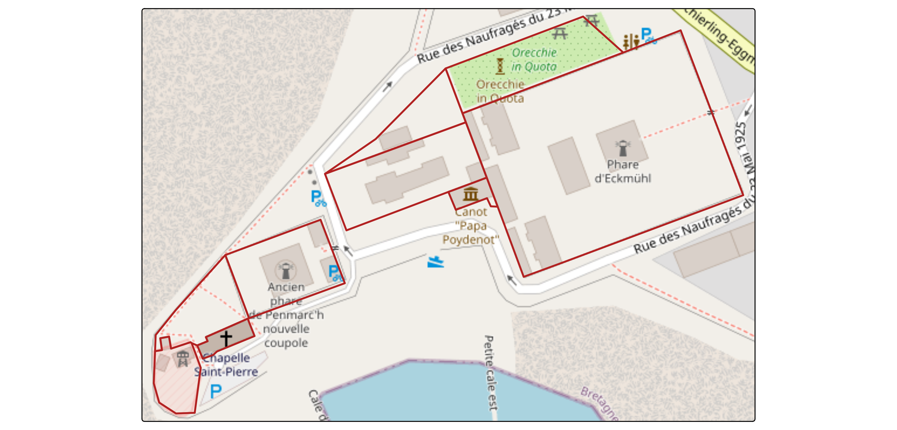

Cadastral parcels
cadastral-parcels.Rmd
knitr::opts_chunk$set(
collapse = TRUE,
out.width = "100%",
dpi = 300,
fig.width = 7.2916667,
comment = "#>"
)
library(Rsequoia2)
#> Attempting to load the package cache ... No cache found.
#> Will try to reconfigure qgisprocess and build new cache ...
library(tmap)
library(openxlsx2)
library(sf)
#> Linking to GEOS 3.12.1, GDAL 3.8.4, PROJ 9.4.0; sf_use_s2() is TRUEThis vignette shows you how retrieve cadastral parcels (CP) from and for Rsequoia2.
How does it works?
Rsequoia2 allow user to download cadastral parcels from
IDU with the function get_parca().
Rq : IDU is a 14-character code that uniquely identifies one cadastral parcel in France build with departement code (2 char), commune code (3 char), prefix (3 char), section (2 char) and parcel number (4 char). For example : This vignette shows you how retrieve cadastral parcels (CP) from and for Rsequoia2.
How does it works?
Rsequoia2 allow user to download cadastral parcels from
IDU with the function get_parca().
Rq : IDU is a 14-character code that uniquely identifies one cadastral parcel in France
For example : 29158000AX0696 - “29” -> Departement code (2 digits) - “158” -> Commune code (3 digits) - “000” -> Prefix / code abs (3 digits) - “AX” -> Section (2 characters) - “0696” -> Parcel number (4 digits)
idu <- c("29158000AX0696")
cp <- get_parca(idu)
tm_tiles("OpenStreetMap")+
tm_shape(cp)+
tm_borders(col = "red", lwd = 2)+
tm_layout(bg = F)get_parca() is vectorized so multiple idu can be used
idus <- paste0("29158000AX0", 696:704)
cp <- get_parca(idus)
tm_tiles("OpenStreetMap")+
tm_shape(cp)+
tm_borders(col = "firebrick", lwd = 2) # BDP and Lieu-dit
get_parca() come with two arguments :
bdp_geom & lieu_dit
bdp_geom - BD Parcellaire :
The BDP (Base de Données Parcellaire) is an older IGN product that is no longer maintained. It was initially derived from the Etalab cadastral parcels, but IGN manually corrected many geometries to better reflect actual field boundaries.
Using BDP data may therefore improve spatial accuracy, although it does not guarantee perfect alignment with the legal cadastral limits.
To use BDP geometries in get_parca(), set
bdp_geom = TRUE; when BDP geometry exists for a given IDU,
it automatically replaces the Etalab geometry.
idus <- paste0("545400000C0", 101:109)
etalab <- get_parca(idus, bdp_geom = FALSE)
bdp <- get_parca(idus, bdp_geom = TRUE)
#> ℹ Downloading BDP from IGN...
#> ✔ 9 of 9 ETALAB geom successfully replaced with BDP geom.
tm_tiles("OpenStreetMap")+
tm_shape(etalab)+
tm_borders(col = "firebrick", lwd = 2)+
tm_shape(bdp)+
tm_borders(col = "blue", lwd = 2)
Lieu-dit :
A lieu-dit is a locality name associated with a cadastral parcel. Although not required for cadastral work, it is often useful to confirm that the retrieved parcels correspond to the expected geographic area.
By default, Etalab cadastral parcels do not include lieu-dit information. However, a separate dataset exists, and retrieving lieu-dit requires performing a spatial join between the two sources.
get_parca() can handle this automatically when:
lieu_dit = TRUE
*/!* Note that this spatial join may be time-consuming for large numbers of parcels.
idus <- paste0("29158000BD00", 10:60)
with_lieu_dit <- get_parca(idus, lieu_dit = TRUE)
#> Warning: Geometry not found for 9 IDU(s): "29158000BD0013", "29158000BD0020",
#> "29158000BD0026", "29158000BD0027", "29158000BD0028", "29158000BD0030",
#> "29158000BD0037", "29158000BD0040", and "29158000BD0042"
#> ℹ Downloading and joining Lieux dits...
#> ✔ Lieux dits joined.
tm_tiles("OpenStreetMap")+
tm_shape(with_lieu_dit)+
tm_polygons(
fill = "LIEU_DIT",
fill.legend = tm_legend(position = c("right", "bottom"))) # How does it works in Sequoia?
As shown earlier, get_parca() retrieves cadastral
parcels directly from their IDU. However, listing all IDUs manually
inside R is often impractical and Sequoia users rarely work with IDUs
directly.
Instead, cadastral parcels are provided through a Sequoia Excel
matrix (*_matrice.xlsx), and the function seq_parca()
automatically retrieves all parcels based on this matrix.
A typical workflow is therefore: - Create or fill an Excel matrix - Call seq_parca() - Let Sequoia handle everything else
The following sections explain how to prepare the matrix and how Sequoia processes it.
1. Creating the Excel matrix
The Excel matrix must contain the following columns:
- IDENTIFIANT: Identifier of the forest (usually the forest name)
- PROPRIETAIRE: Owner’s name
- INSEE: Commune INSEE code
- PREFIXE: Prefix of the cadastral parcel
- SECTION: Cadastral section
- NUMERO: Parcel number
- LIEU_DIT: Locality name (optional)
Rules to follow: - The file name must end with “_matrice.xlsx” - Only one matrix file should exist in the Sequoia directory - The matrix must contain one unique IDENTIFIANT
To avoid formatting mistakes, you can generate an empty matrix with:
sequoia_dir <- file.path(tempdir(), "MY_FOREST")
dir.create(sequoia_dir)
matrice_path <- create_matrice(sequoia_dir, id = "MY_FOREST")
#> ✔ Excel file created at: /tmp/RtmpyH14Rb/MY_FOREST/MY_FOREST_matrice.xlsxYou can then manually fill the Excel file.
2. Running the Sequoia parcel retrieval
Once the matrix is prepared, the entire cadastral workflow is handled
by seq_parca().
This function: - Reads the Excel matrix - Builds IDUs from matrix
fields - Downloads cadastral parcels : BDP geometry is used when
available (bdp_geom = TRUE) - Retrieves missing lieu-dit
values (lieu_dit = TRUE) - Writes the result into the
Sequoia directory
To illustrate this workflow, we use an internal example matrix shipped with the package.
This mirrors what a user would do in practice: place a correctly
formatted **_matrice.xlsx* file inside a Sequoia directory, then let
seq_parca() process it.
Step 1 — Set up a Sequoia directory and copy the example matrix into it
matrice <- read_xlsx(system.file("extdata/ECKMUHL_matrice.xlsx", package = "Rsequoia2"))
sequoia_dir <- file.path(tempdir(), "ECKMUHL")
dir.create(sequoia_dir)
write_xlsx(matrice, file.path(sequoia_dir, "ECKMUHL_matrice.xlsx"))Step 2 — Run seq_parca() and load the resulting parcels
parca_path <- seq_parca(sequoia_dir)
#> ℹ Downloading BDP from IGN...
#> ✔ 9 of 9 ETALAB geom successfully replaced with BDP geom.
#> ✔ Vector layer "v.seq.parca.poly" saved to ECKMUHL_SEQ_PARCA_poly.geojson.
parca <- read_sf(parca_path)
tm_tiles("OpenStreetMap")+
tm_shape(parca)+
tm_borders(col = "firebrick", lwd = 2)